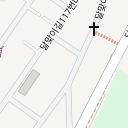
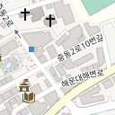
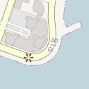

오전 열 시에 열어요. 아침 후보가 아니라 점심이나 저녁 자리입니다.
- 전화
- 051-747-6688
- 아이·어르신
- 단체석 · 유아의자 · 콜키지 무료
현장 가이드 · 메뉴와 팁 1개
숙소에서 가장 가까워요
한화리조트 바로 옆 건물이에요. 왕갈비탕이 대표 메뉴입니다.
저녁에 다른 데가 당기면 여기서 골라 길찾기로 바로 열어요. 경로는 방금 보던 일정의 직전 장소에서 출발해요.
숙소 밖이라 그랩이나 택시로 나가야 해요.
오전 열 시에 열어요. 아침 후보가 아니라 점심이나 저녁 자리입니다.
숙소에서 가장 가까워요
한화리조트 바로 옆 건물이에요. 왕갈비탕이 대표 메뉴입니다.
오전 열한 시에 열어요. 그리고 두 출처 합쳐 후기가 다섯 건이라 판단할 근거가 없습니다.

민락 — 광안해변로
예약 없이 가는 워크인이에요. 1층 마산상회에서 회를 뜨고 2층 초장집으로 올라가요.
드론쇼가 걸어서 갈 거리
민락수변공원이 바로 옆이라 먹고 나와서 자리를 잡으면 돼요.
직선보다 멀어요
지도에서는 가까워 보이는데 수영강 하구를 돌아가야 해서 택시로 15분쯤 걸립니다.
전화로 미리 예약하세요. 예약을 받고 캐치테이블 대기도 돼요.
늦게까지 열어요
다섯 시에 열고 금·토는 새벽 두 시까지예요. 밤에 배가 고파지면 걸어갈 수 있는 유일한 집입니다.

달맞이길
매일 10:00–20:00구글 08/09 확인
언제 쓰나
밥과 놀이가 한 번에 해결되는 곳이에요. 너무 덥거나 비가 와서 하루가 무너질 때의 대비책으로 남겨 뒀어요.

중동 — 해운대구청 앞
매일 09:00–21:00구글 08/10 확인
여긴 이래요
구청 앞 돼지국밥집이라 관광객보다 동네 사람이 많은 자리예요.

마린시티
구글에도 카카오에도 번호가 없어요. 가기 전에 검색해서 확인하세요.
여긴 이래요
창가에서 바다가 보이는 중식당이에요. 지우가 다른 걸 안 먹으려 할 때 짜장면으로 돌릴 수 있는 카드입니다.
아직 정하지 않은 자리의 후보예요. 일정에서 골라 주세요.
구글은 후기 2,669건에 4.9인데 카카오는 21건에 2.4예요. 카카오 상위 후기 세 건이 모두 별점 1점이고, 블로그 글에는 가게가 직접 쓴 것도 섞여 있습니다.
무한리필집이에요
카카오 태그가 조개구이무한리필이에요. 값이 싼 이유일 수도, 후기가 갈리는 이유일 수도 있습니다.
두 출처 다 점수는 높은데 후기 수가 66건과 35건뿐이에요.
아이와 함께
생선살을 발라 주면 지우가 먹을 것이 확실해요.
여긴 이래요
통창으로 바다가 보이고 위층 자리가 있어요. 조개구이집에서 걸어갈 거리입니다.
표본이 더 커요
청사포에서 조금 더 나가지만 후기 수가 오브커피살롱보다 많아요. 테라스가 있습니다.
예약 없이 가는 워크인이에요. 캐치테이블로 도착을 인증하고 순서를 기다리는 방식이에요.
두 출처가 가장 안정적
구글 4.5에 카카오 4.4예요. 후보 중 양쪽 점수가 가장 가깝고 표본도 충분합니다.
아이와 함께
아기를 데리고 온 손님이 많은 집이에요. 곰탕에 밥을 말아 주면 지우도 먹을 게 확실합니다.
청사포로 12에도 같은 이름의 다른 집이 있어요. 위에 적힌 주소와 전화가 우리가 갈 집입니다.
두 출처가 일치해요
구글 4.4에 카카오 4.0이라 후보 중 유일하게 양쪽이 같은 방향입니다.
표본이 비슷한데 구글 4.3에 카카오 3.0이에요. 판단이 서지 않으면 낮은 쪽을 보는 편이 안전합니다.
일요일 아침도 열어요
화요일부터 토요일까지 24시간이고 일요일도 밤 10시까지예요.
예약 없이 가는 워크인이에요.
복어는 지우에게 주지 마세요. 밥과 맑은 국물만 덜어 주는 편이 안전해요.
표본이 압도적
후기가 구글 7,697건에 카카오 538건이라 이 목록에서 가장 믿을 만한 숫자예요.
부산 빵집
부산 사람들이 선물용으로 사는 집이에요. 테라스가 있습니다.
카카오가 문화시설로 분류해요. 입점 매장마다 메뉴와 시간이 달라서 저녁 한 끼를 정해 놓고 가기는 애매합니다.
여긴 야경
마린시티 마천루가 물에 비치는 자리라 해가 진 뒤가 좋아요.
전용 주차장이 좁아요. 외삼촌 차로 갈 때는 다른 날로 미루는 편이 낫습니다.
전용 주차장이 없어요. 인근 유료주차장에 1,000원 할인만 됩니다.
케이크도 여기
토요일 저녁 어머니 생신 케이크를 살 곳이에요.
카카오 후기가 여덟 건에 2.6이에요. 구글 4.0과 갈리는데 어느 쪽도 판단할 만큼 쌓이지 않았습니다.
여긴 바다 정면
해수욕장 동쪽 끝이라 먹고 나와서 바로 백사장으로 갈 수 있어요.
구글은 11시, 카카오는 12시, 트리플은 오후 4시라고 합니다. 낮에 가려면 전화로 먼저 확인하세요.
야외 방갈로에 연탄 테이블이에요. 8월 낮 열두 시에 세 살과 앉을 자리가 아닙니다.
조개구이집이 아니라 장어집으로 등록돼 있어요. 두 출처 점수도 이 목록에서 낮은 편입니다.
구글 3.4에 카카오 2.4예요. 시장 골목 구경이 목적이면 몰라도 끼니로는 이 목록에서 가장 낮습니다.
그래도 좋은 점
맵지 않은 떡볶이라 지우가 먹을 수 있고, 시장 골목 자체가 볼거리예요.